Key to superfamilies of Calyptratae
1.
- Coxae of middle and mostly of hind legs widely separated. Tarsal claws strongly recurved and toothed. Ectoparasites of birds and mammals.
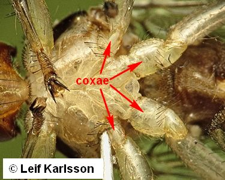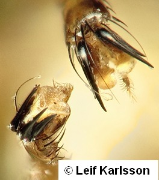
Hippoboscoidea
- Coxae of middle and hind legs not distinctly separated. Tarsal claws simple.
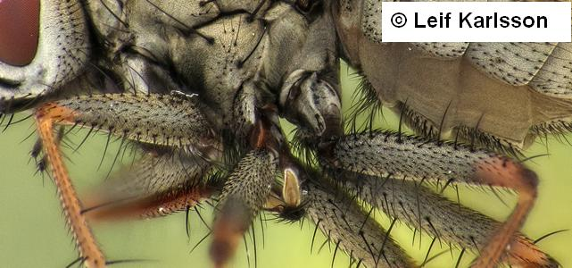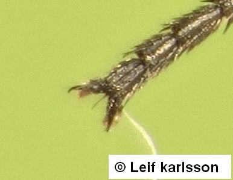
2
- Mouthparts reduced: proboscis vestigial, subcranial cavity much reduced. Subscutellum more or less swollen.
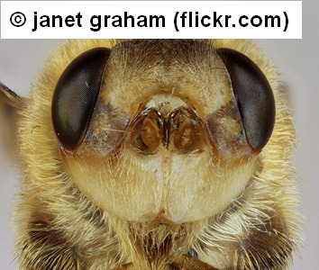
Oestroidea, part
- Mouthparts normal: proboscis developed, subcranial cavity not much reduced.
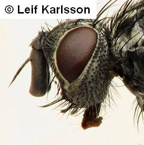
3
- Meron (hypopleuron) usually bare or with weak hairs or setulae. If seldom bristled, vein M1 not distinctly bent forward distally.
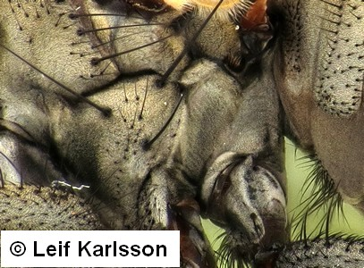
4
- Meron (hypopleuron) with a series (sometimes few) of long hypopleural bristles arranged in a more or less vertical row. Vein M1 usually strongly bent forward distally.
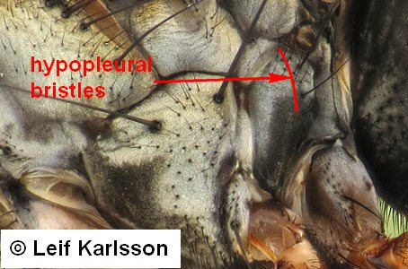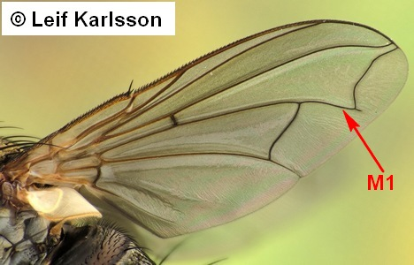
Oestroidea, part
- Vein A1 not reaching wing margin.

5
- Vein A1 reaching wing margin, sometimes only as a faint but still distinct crease-like fold).
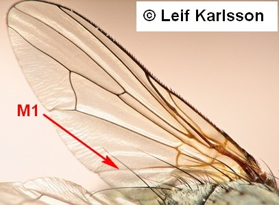
Muscoidea, part
- Male first flagellomere greatly enlarged, axehead-like, or excavated to form 3 to 4 porrect, digi- tiform lobes. Females with robust, downcurved, spatulate terminalia.

Oestroidea
Calliphoridae, part
- Male first flagellomere and female genitalia not as above.
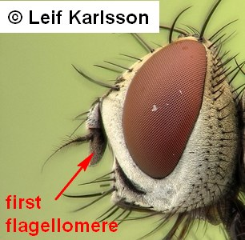
Muscoidea, part